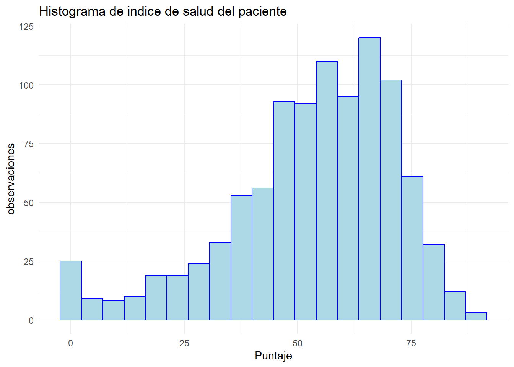
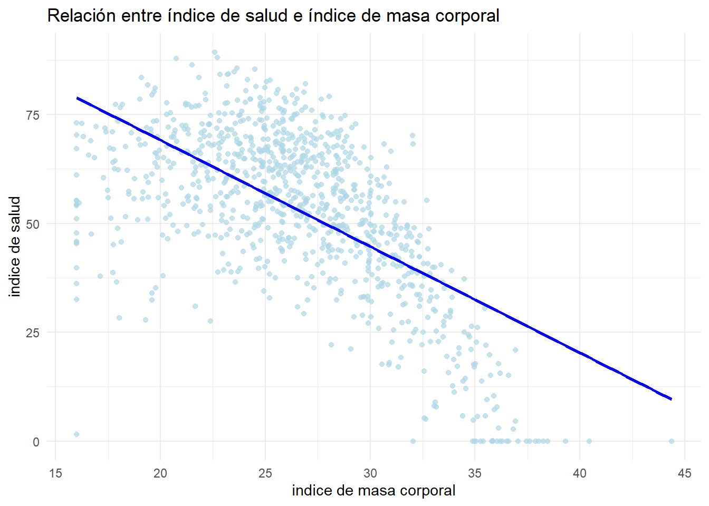
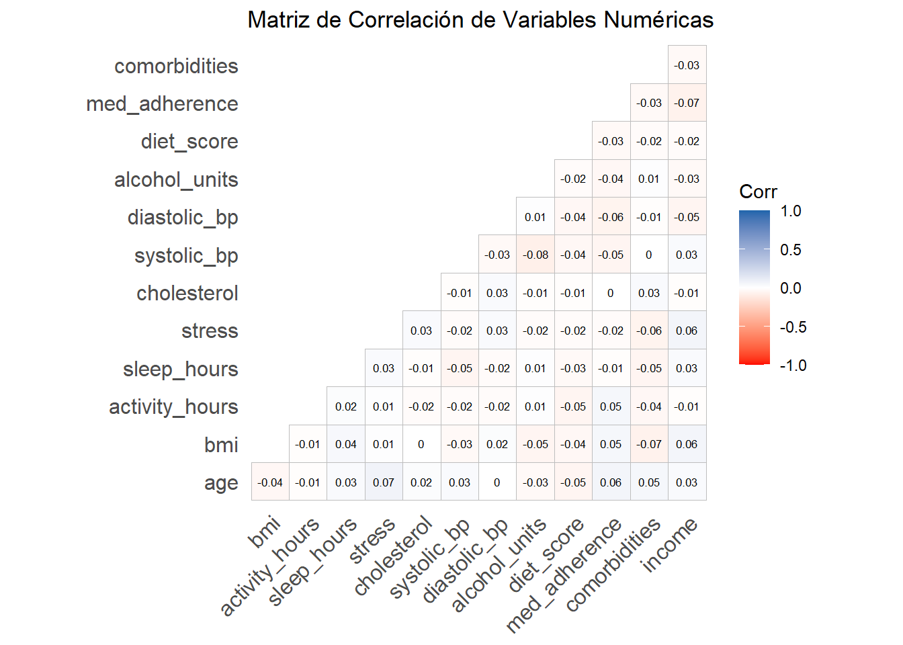
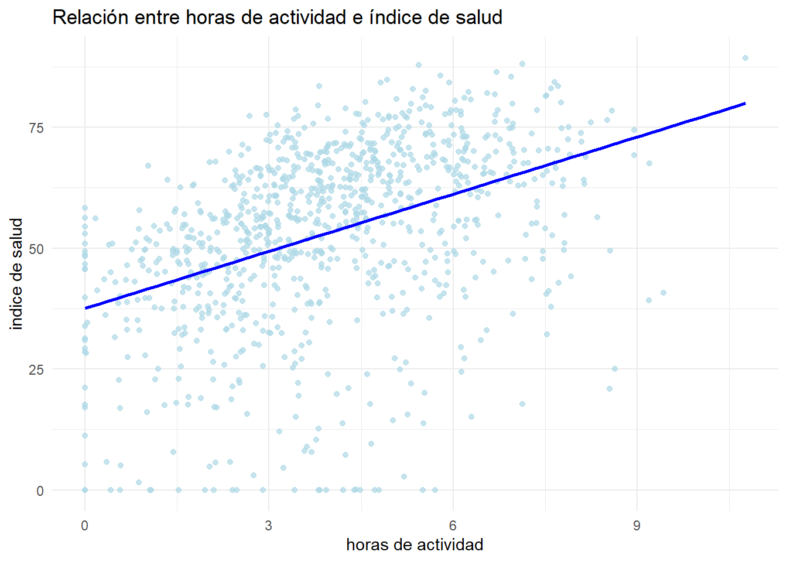
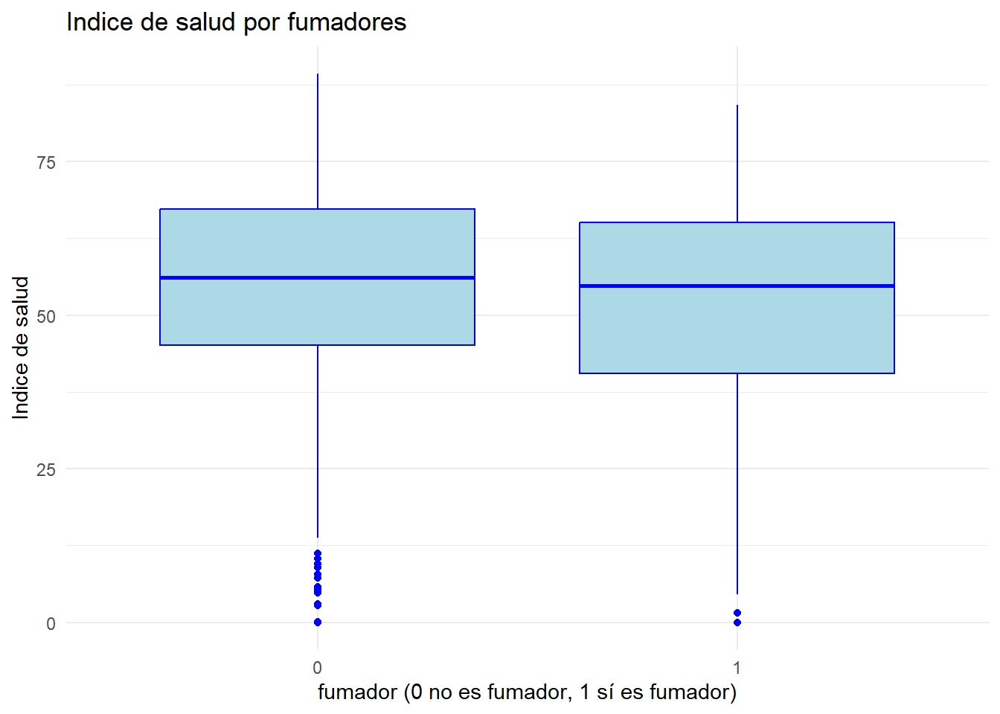
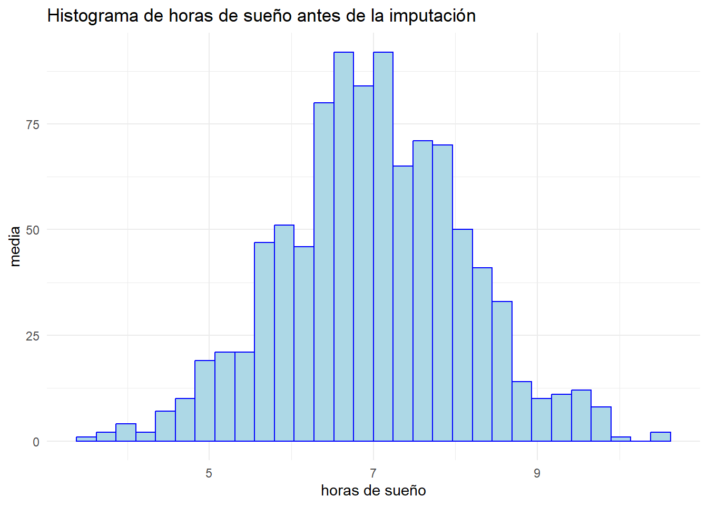
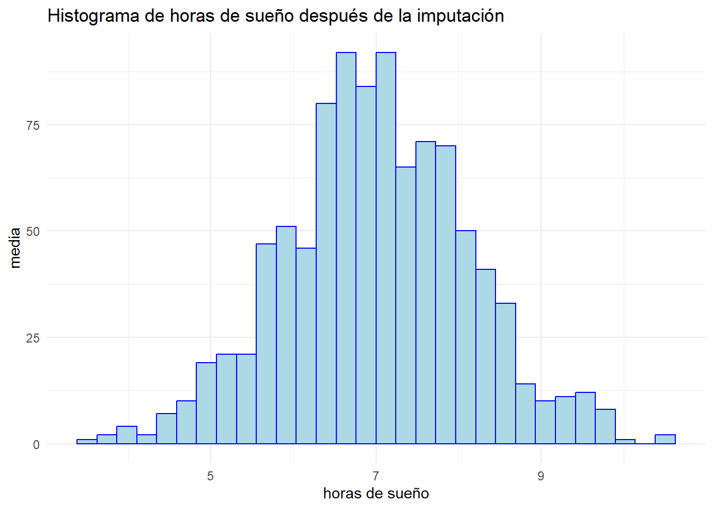

El objetivo de este trabajo es hacer un estudio estadísticos sobre un conjunto datos que contiene informacion sanitaria de una serie da pacientes.
En este contexto aprenderemos desde como hacer sus primeras observaciones y la trata de elementos faltantes hasta ver las iteracciones de las varaiables en un modelo de inferencia.
Bloque 1: Exploración inicial
Para comenzar con el estudio es necesario primero cargar los datos. Par esto usamos la función read.csv y mostramos sus primeras lineas para ver que este es la base de datos correcta.
En este subapartado calcularemos la media, mediana y desviación típica de la variable health_score (índice de salud):
Índice de Salud
media 53.10447
mediana 55.90500
desviación típica 18.62233
En este caso los resultado obtenidos son:
Media: En estadítica la media indica el promedio de todos los valores juntos, se calcula como el sumatorio de todos los valores partido de el número total de elemntos. En este contexto, se ha obtenido que los pacientes siguen un indice de salud global promedio a 53.1045.
Mediana: La mediana es el la posición central cuando todos los datos son ordenados en una escala de menor a mayor. En este caso, la tendencia central es 55.905.
Desviación típica: La desviación típica mide el grado de dispersión de los datos, es decir, indica cuanto se alejan estos en promedio respecto a la media. En nuestro conjunto, los datos presentan una dispersion de 18.6223 con respecto a la media aritmética.
1.2. Puntaje de índice de salud.
A continuación se ha realizado un histograma de los de la variable health_score en 20 intervalos.

A partir de la gráfica obtenida se puede obeservar que, en general, la mayoría de pacientes presentan un índice de salud, de entre los \(44\) y \(70\) puntos (moda). En particular, el puntaje con un mayor número de pacientes ronda los \(68\) puntos mas o menos, con casi \(125\) pacientes.
1.3. Distribucion de frecuencias relativas de los pacientes por sexo.
A continuación calcularemos la frecuencia relativas de los pacientes por sexo.
La frecuencia relativa de un valor se calcula como la división de la frecuencia absoluta de ese valor (número de veces que se repite ese valor en el conjunto de datos) entre el número total de datos.
Como podemos observar a traves de la tabla, los hombre presentan una frecuencia relativa de round(porcentaje[1],4)%; las mujeres con round(porcentaje[2],4)% y finalmente otros con round(porcentaje[3],4)%.
1.5. Diagrama de dispersion entre índice de salud e índice de masa corporal
En este apartado se desea estudiar que relación puede haber entre en la variable bmi (índice de masa corporal) y health_score entre los pacientes. Para ello se ha creado la siguiente gráfica de dispersión:
#|echo: falseggplot(health_df, aes(x = bmi, y = health_score)) +geom_point(alpha =0.7,color="lightblue") +geom_smooth(method ="lm", se =FALSE, color ="blue") +labs(title ="Relación entre índice de salud e índice de masa corporal",x ="indice de masa corporal", y ="indice de salud") +theme_minimal()
`geom_smooth()` using formula = 'y ~ x'
Warning: Removed 9 rows containing non-finite outside the scale range
(`stat_smooth()`).
Warning: Removed 9 rows containing missing values or values outside the scale range
(`geom_point()`).

Como se puede observar, a medida que el índice de masa corporal va aumentando, el índice de salud de los pacientes va disminuyendo. Por lo tanto, podemos suponer que existe una relacion negativa entre ambas variables.
Sin embargo, cabe destacar que los puntos de la gráfica siguen una forma curvilinea y además hay una cola en la gráfica, lo que indica un supuesto de violación en la linealidad y normalidad de los residuos. Por lo tanto, para poder hacer correctamente un estudio inferencial, se debería hacer una serie de transformaciones, lo que podría cambiar nuestra suposición inicial.
1.6. Matriz de correlaciones entre variables numéricas.
En este apartado se desea calcular la matriz de correlaciones de todos los datos numericos que contiene nuestra base de datos. Esta matriz indicará el nivel de relación existente entre las variables.
#|echo: falsevar_numericas <- health_df[, c("age","bmi","activity_hours","sleep_hours","stress", "cholesterol","systolic_bp","diastolic_bp","alcohol_units", "diet_score","med_adherence","comorbidities","income")]cor_matrix <-cor(var_numericas, use ="pairwise.complete.obs")# Representación gráfica de la matrizggcorrplot(cor_matrix,hc.order =FALSE,type ="lower",lab =TRUE,lab_size =2.2,colors =c("red", "white", "#2166AC"),title ="Matriz de Correlación de Variables Numéricas",ggtheme =theme_minimal()) +theme(axis.text.x =element_text(angle =45, vjust =1, hjust =1),panel.grid =element_blank() )

Las correlaciones se calculan mediante el coeficientes de correlación de Pearson, que se mueve en el intevalo \([-1,1]\).
A partir del mapa de calor de las variables numéricas, se puede apreciar que la gran mayoría de los coeficientes de correlacion oscilan en valores cercanos al cero (entre (-0.08) y (0.08)), lo que visualmente se traduce en celdas con tonalidades blancas.
Sin embargo, es posible destacar algunos relaciones dentro de esta baja linealidad:
• Asociaciones negativas: Destaca la relación entre las variables de systolic_bp (presión arterial) con alcohol_units (unidades de alcohol) de (-0.08)) o los niveles de adherencia médica frente a las comorbilidades med_adherence (nivel de adherencia del tratamiento) con comorbidities (número de comorbilidades diagnosticadas) de (-0.07)). Aunque estadísticamente son relaciones muy débiles
• Asociaciones positivas: Variables como la age (edad) muestran una correlación positiva con los niveles de stress de (0.07)).
En conclusión, dado que prácticamente ninguna variable numérica comparte una relación lineal directa con otra, se verifica que no existen problemas de multicolinealidad en los datos.
1.7. Gráfico de dispersión entre horas de actividad e indice de salud
En este apartado se desea estudiar que relación puede haber entre en la variable activity_hours (horas de actividad) y health_score entre los pacientes. Para ello se ha creado la siguiente gráfica de dispersión:
#|echo: falseggplot(health_df, aes(x = activity_hours, y = health_score)) +geom_point(alpha =0.7, color="lightblue") +geom_smooth(method ="lm", se =FALSE, color ="blue") +labs(title ="Relación entre horas de actividad e índice de salud",x ="horas de actividad", y ="indice de salud") +theme_minimal()
`geom_smooth()` using formula = 'y ~ x'
Warning: Removed 9 rows containing non-finite outside the scale range
(`stat_smooth()`).
Warning: Removed 9 rows containing missing values or values outside the scale range
(`geom_point()`).

A partir del gráfico de dispersión se puede evidenciar una tendencia positiva entre ambas variables, es decir, un mayor número de horas de actividad esta asociada con un mayor índice de salud.
No obsetante, si se hace un un analisis visual se puede deterctar una violacion en el supuesto de linealidad de los parametros.
Curvatura: Se puede ver una curvatura en la nube de puntos, donde a partir de las \(4,5\) horas de ejercicio, los puntos suben ligeramente y alrededor de la \(7,5\) horas se puede ver un descenso en ellos.
Por otro lado, también se puede ver un problema de homocedatidad debido a que la dispesión de los puntos en la nube se va estrechando a medidad que aumentan las horas de ejercicio, lo que indica que la varianza de los errores no es constante.
1.8. Boxplot de health_score por fumador.
A continuación se desea crear una gráfica boxplot por fumadores:
#|echo: falseggplot(health_df, aes(x =factor(smoker), y = health_score)) +geom_boxplot(fill ="lightblue", color="blue") +labs(title ="Indice de salud por fumadores",x ="fumador (0 no es fumador, 1 sí es fumador)",y ="Indice de salud") +theme_minimal()

1.9. Identifica posibles valores atípicos en cholesterol.
1.10. Calcula la proporción de pacientes con enfermedad controlada
Bloque 2: Manejo de valores faltantes
2.1. Identifica las variables que contienen valores faltantes y cuántos casos faltan en cada una.
En este caso las variables que tienen valores faltantes son en bmi, activity_hours, sleep_hours, stress y cholesterol, que tienen nueve valores nulos.
Al ver este resultado nos ha sorprendido que todas estas variables tuviesen el mismo número de valores nulos, por lo que hemos hecho una tabla que nos muestras que filas tienen estos valores ausentes por varaible.
# 1. Obtener la matriz de posicionesposiciones_na =which(is.na(health_df), arr.ind =TRUE)# 2. Convertirlo en un data.frame ordenado y bonitodf_nas =data.frame(Fila = posiciones_na[, "row"],Variable =names(health_df)[posiciones_na[, "col"]])# 3. Ver los primeros resultados (o todo el objeto)head(df_nas, 45)
Como podemos comprobar estos valores nulos no estan en las mismas filas
2.2. Calcula la proporción total de valores faltantes sobre el dataset completo.
A continuación hemos calculado el procentaje total de valores nulos.
# 1. Proporción total de NA (da un valor entre 0 y 1, por ejemplo: 0.02)proporcion_nas =mean(is.na(health_df))cat("proporcion total de valores nulos:",proporcion_nas*100,"\n")
proporcion total de valores nulos: 0.2095753
2.3. Construye una tabla resumen con las variables que presentan missing y el porcentaje de datos ausentes en cada una.
2.5. Representa histogramas de sleep_hours antes y después de la imputación por media. ¿Observas cambios en la distribución?
A continuacíón vamos a ver como han cambiado estos datos tas su imputacion:
#histograma antes de la imputacionggplot(health_df, aes(x = sleep_hours)) +geom_histogram(fill ="lightblue", color ="blue") +labs(title ="Histograma de horas de sueño antes de la imputación",x ="horas de sueño",y ="media") +theme_minimal()
`stat_bin()` using `bins = 30`. Pick better value `binwidth`.
Warning: Removed 9 rows containing non-finite outside the scale range
(`stat_bin()`).

#histograma despues de la imputacionggplot(health_df_imputado, aes(x = sleep_hours)) +geom_histogram(fill ="lightblue", color ="blue") +labs(title ="Histograma de horas de sueño después de la imputación",x ="horas de sueño",y ="media") +theme_minimal()
`stat_bin()` using `bins = 30`. Pick better value `binwidth`.
Warning: Removed 9 rows containing non-finite outside the scale range
(`stat_bin()`).

Al comparar las dos gráficas, pordemos ver que estas son iguales. Esto es debido a que nuestros datos contiene la información de casi mil pacientes y tenemos un total de \(45\) datos n/a, por lo que el cambio no se nota mucho.
2.6. Aplica una imputación por la mediana en stress. Compara los resultados con la imputación por la media.
La imputación no solo se puede hacer con la media de la variable, sino tambien con su mediana. En este caso vamos a imputar la variable stress mediante su mediana.
2.8. Discute si es razonable suponer que los valores faltantes son MCAR, MAR o MNAR en este contexto de salud.
MCAR: Indica que los valores faltan por puro azar. En el contexto de la salud, esto no puede ser posible, ya que los datos médicos se recogen mediante el historial de los pacientes, sensores de dispositivos de salud, pruebas etc…, por lo tanto son datos protegidos.
MAR: Indica que los valores faltan debido a la falta de otras variables.
2.9. Ajusta un modelo lineal simple (health_score ~ bmi) usando solo casos completos. ¿Cuántas observaciones se pierden?
2.10. Repite el modelo anterior pero con el dataset imputado. ¿Cambian los coeficientes? Explica por qué.